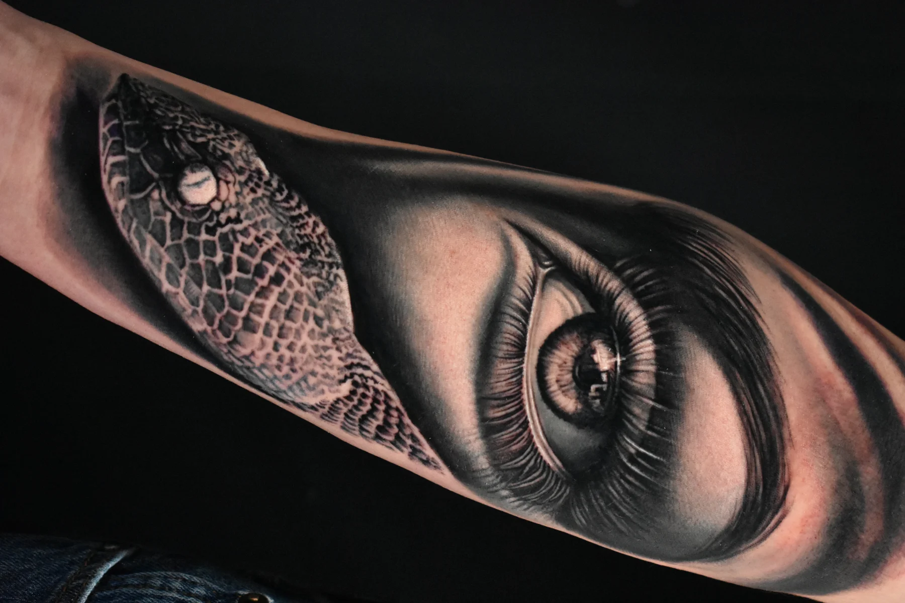
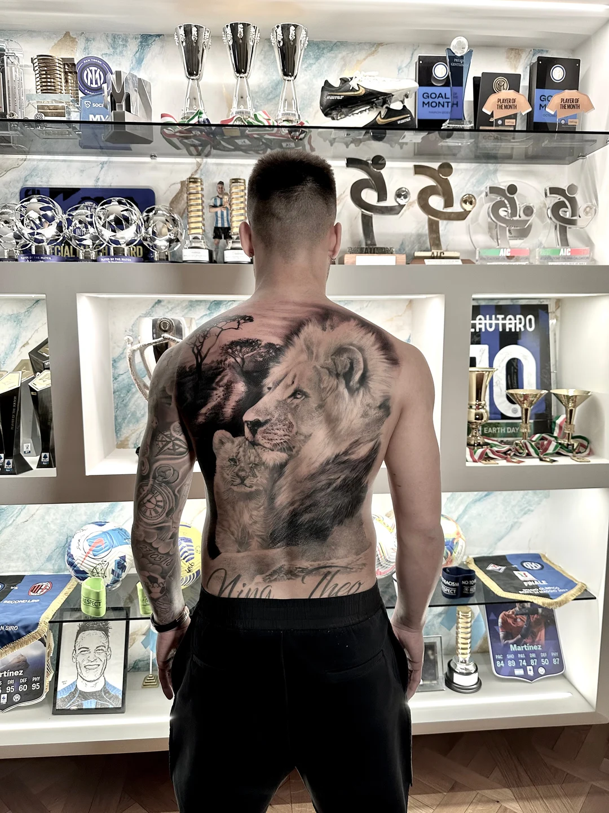

The work · scroll to move inside the detail

Hyper-detailed black & grey and color tattoos. Portraits, wildlife, sacred art and full sleeves — by appointment and across the U.S. convention circuit.
Photorealistic black and grey tattoos — portraits, religious figures and statues rendered in deep contrast and fine detail. The signature of a realism specialist.
Sacred · portrait Sacred · portrait
Sacred · portrait Portrait realism
Portrait realism Portrait · chest
Portrait · chest Statue realism
Statue realism Figure realism
Figure realism Statue realism
Statue realism Portrait realism
Portrait realismLions, tigers, panthers, eagles and serpents in hyper-realistic black and grey — fur, scale and the catchlight in the eye, drawn by hand.
Panther LionTiger · detail
LionTiger · detail Lion
Lion Serpent
Serpent Eagle
Eagle Lion
Lion Tiger
TigerVivid color realism — portraits, nature and bold compositions with lifelike skin tones, light and saturation that hold for years.
Color portrait Color portrait
Color portrait Color portrait
Color portrait Owl · nature
Owl · nature Floral
Floral Tropical sleeve
Tropical sleeve Color sleeve
Color sleeve Full color sleeve
Full color sleeveFull sleeves, back pieces and architectural realism — from cathedrals and the Milan Duomo to compositions that flow across the whole body.
 Warrior sleeveArchitecture
Warrior sleeveArchitecture Architecture
Architecture Full sleeve
Full sleeve Full sleeve
Full sleeve Full sleeve
Full sleeve
Back piece Back piece
Back piece
Giuseppe Bonelli is a realism specialist — black & grey and color work rendered with obsessive precision. Skin, light and emotion, built to read like a photograph and to last like one.
Every tattoo is a custom commission, designed one-to-one around the person who wears it. Now accepting select bookings at the studio and across the U.S. convention circuit.
Convention schedule updated soon — reserve a slot in advance.
Limited availability. Share your concept, placement and timeline — I'll come back with a plan.
Request a session